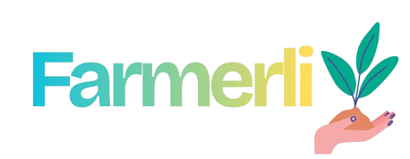

Get exclusive savings while cutting down on food waste and supporting local farmers
Reduce waste and improve soil health with sustainable, long-term agricultural methods.
Save water using intelligent irrigation systems designed for modern farming efficiency.
Focused on natural crop production that supports healthy ecosystems and biodiversity.